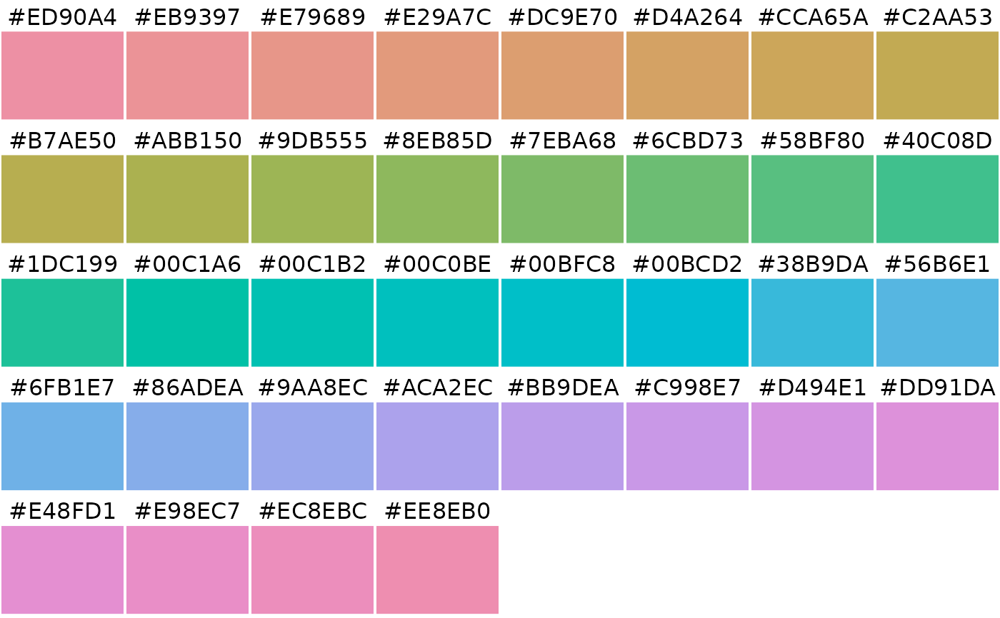
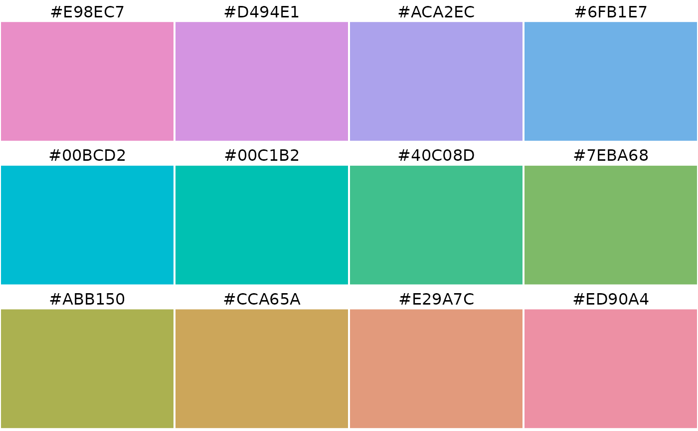
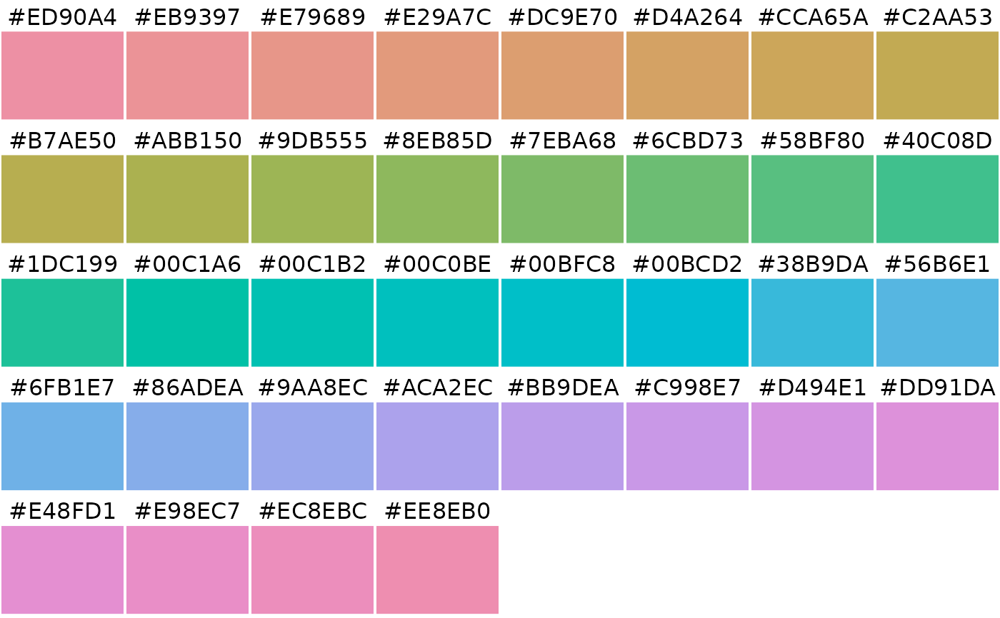
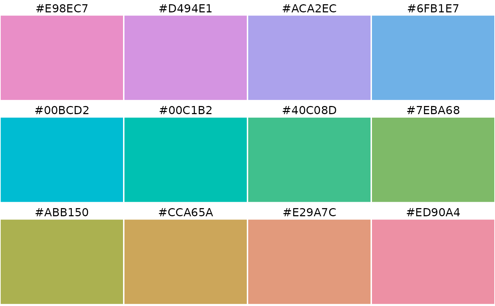
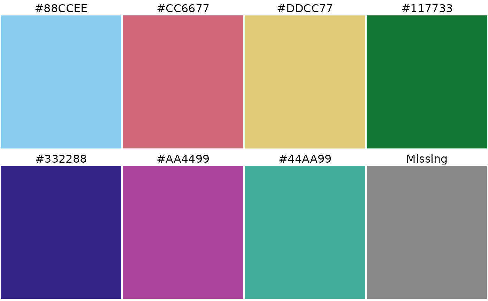
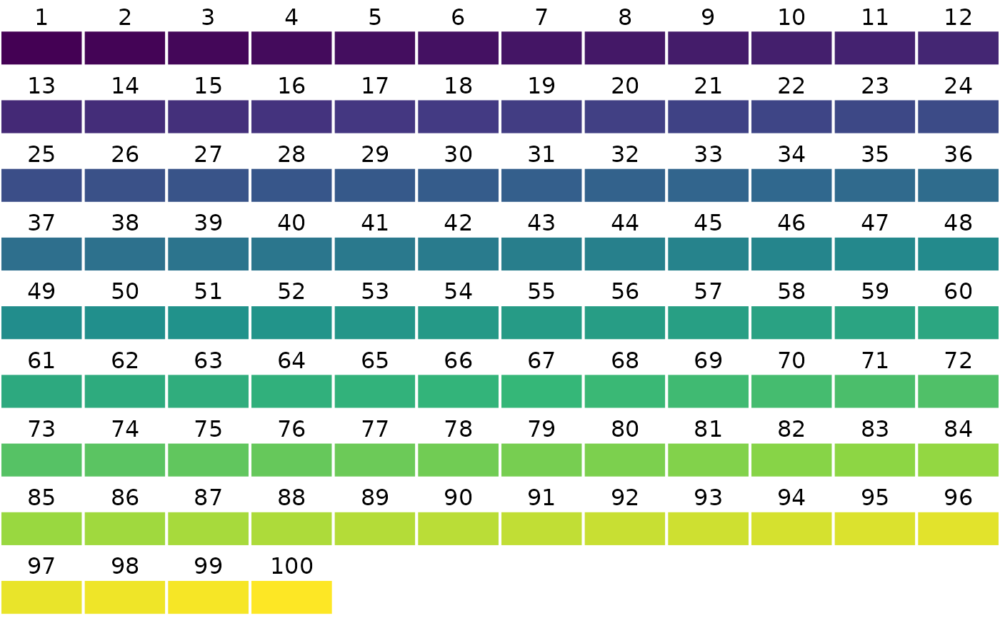
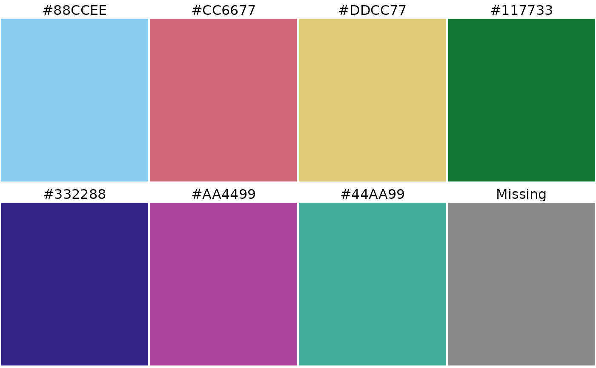
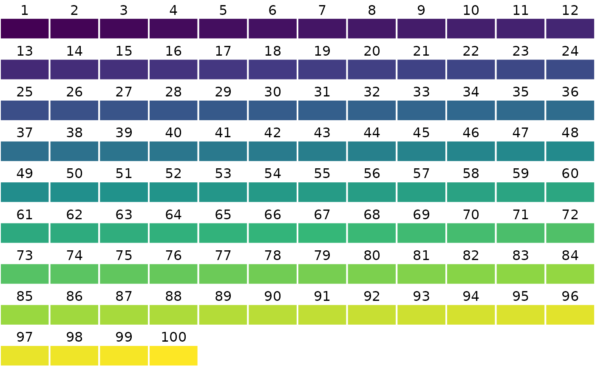

Get a cols4all color palette: c4a returns the colors of the specified palette, c4a_na returns the color for missing value that is associated with the specified palette, and c4a_ramp returns a color ramp function. Run c4a_gui to see all available palettes, which are also listed with c4a_palettes.
Usage
c4a(
palette = NULL,
n = NA,
m = NA,
type = c("cat", "seq", "div", "cyc", "bivs", "bivc", "bivd", "bivg"),
reverse = FALSE,
order = NULL,
range = NA,
colorsort = "orig",
format = c("hex", "rgb", "hcl", "RGB", "XYZ", "HSV", "HLS", "LAB", "polarLAB", "LUV",
"polarLUV"),
nm_invalid = c("error", "repeat", "interpolate"),
verbose = TRUE
)
c4a_ramp(..., space = c("rgb", "Lab"), interpolate = c("linear", "spline"))
c4a_na(
palette = NULL,
type = c("cat", "seq", "div", "cyc", "bivs", "bivc", "bivd", "bivg"),
verbose = TRUE
)Arguments
- palette
name of the palette. See
c4a_palettesfor available palettes. If omitted, the default palette is provided byc4a_default_palette. The palette name can be prefixed with a"-"symbol, which will reverse the palette (this can also be done with thereverseargument).- n
number of colors. If omitted then: for type
"cat"the maximum number of colors is returned, for types"seq","div", and"cyc", 7 , 9, and 9 colors respectively.- m
number of rows in case type is bivariate, so one of
"bivs","bivc","bivd"or"bivg"(seec4a_typesfor descriptions)- type
type of color palette, in case
paletteis not specified: one of"cat","seq","div","cyc","bivs","bivc","bivd","bivg". Runc4a_typesfor descriptions.- reverse
should the palette be reversed?
- order
order of colors. Only applicable for
"cat"palettes- range
a vector of two numbers between 0 and 1 that determine the range that is used for sequential and diverging palettes. The first number determines where the palette begins, and the second number where it ends. For sequential
"seq"palettes, 0 means the leftmost (normally lightest) color, and 1 the rightmost (often darkest) color. For diverging"seq"palettes, 0 means the middle color, and 1 both extremes. If only one number is provided, this number is interpreted as the endpoint (with 0 taken as the start).- colorsort
Sort the colors. Options:
"orig"(original order),"Hx"(hue, where x is a starting number from 0 to 360),"C"(chroma),"L"(luminance). All these options are available for"cat"palettes, only the last one for"seq", and none for the other palette types.- format
format of the colors. One of:
"hex"character vector of hex color values,"rgb"3 column matrix of RGB values,"hcl"3-column matrix of HCL values, or one of the color classes fromcolorspace- nm_invalid
what should be done in case
normis larger than the maximum number of colors or smaller than the minimum number? Options are"error"(an error is returned),"repeat", the palette is repeated,"interpolate"colors are interpolated. For categorical"cat"palettes only.- verbose
should messages be printed?
- ...
passed on to
c4a.- space
a character string; interpolation in RGB or CIE Lab color spaces
- interpolate
use spline or linear interpolation
Examples
# get the colors from brewer.set3 and plot them
set3 <- c4a("brewer.set3")
c4a_plot_hex(set3, nrows = 1)
 c4a("hcl.set2", n = 36) |> c4a_plot_hex()

c4a("-hcl.set2", n = 12) |> c4a_plot_hex()

# how to know which palettes are avaiable?
# 1) Via the interactive tool:
if (FALSE) { # \dontrun{
c4a_gui()
} # }
# 2) Via the overview function:
c4a_palettes(type = "cat")
#> [1] "misc.r3" "misc.r4"
#> [3] "misc.ggplot2" "misc.okabe"
#> [5] "brewer.accent" "brewer.dark2"
#> [7] "brewer.paired" "brewer.pastel1"
#> [9] "brewer.pastel2" "brewer.set1"
#> [11] "brewer.set2" "brewer.set3"
#> [13] "tol.bright" "tol.contrast"
#> [15] "tol.vibrant" "tol.muted"
#> [17] "tol.medium" "tol.light"
#> [19] "tol.dark" "tol.rainbow"
#> [21] "misc.watlington" "wes.bottle_rocket1"
#> [23] "wes.bottle_rocket2" "wes.rushmore1"
#> [25] "wes.rushmore" "wes.royal1"
#> [27] "wes.royal2" "wes.zissou1continuous"
#> [29] "wes.darjeeling1" "wes.darjeeling2"
#> [31] "wes.chevalier1" "wes.fantastic_fox1"
#> [33] "wes.moonrise1" "wes.moonrise2"
#> [35] "wes.moonrise3" "wes.cavalcanti1"
#> [37] "wes.grand_budapest1" "wes.isle_of_dogs1"
#> [39] "wes.isle_of_dogs2" "wes.isleof_dogs2"
#> [41] "wes.french_dispatch" "wes.asteroid_city1"
#> [43] "wes.asteroid_city2" "wes.asteroid_city3"
#> [45] "carto.vivid" "carto.safe"
#> [47] "carto.prism" "carto.pastel"
#> [49] "carto.bold" "carto.antique"
#> [51] "hcl.pastel1" "hcl.dark2"
#> [53] "hcl.dark3" "hcl.set2"
#> [55] "hcl.set3" "hcl.warm"
#> [57] "hcl.cold" "hcl.harmonic"
#> [59] "hcl.dynamic" "scico.acton_cat"
#> [61] "scico.bamako_cat" "scico.batlow_cat"
#> [63] "scico.batlowK_cat" "scico.batlowW_cat"
#> [65] "scico.bilbao_cat" "scico.buda_cat"
#> [67] "scico.davos_cat" "scico.devon_cat"
#> [69] "scico.glasgow_cat" "scico.grayC_cat"
#> [71] "scico.hawaii_cat" "scico.imola_cat"
#> [73] "scico.lajolla_cat" "scico.lapaz_cat"
#> [75] "scico.lipari_cat" "scico.navia_cat"
#> [77] "scico.nuuk_cat" "scico.oslo_cat"
#> [79] "scico.tokyo_cat" "scico.turku_cat"
#> [81] "tableau.10" "tableau.20"
#> [83] "tableau.color_blind" "tableau.seattle_grays"
#> [85] "tableau.traffic" "tableau.miller_stone"
#> [87] "tableau.superfishel_stone" "tableau.nuriel_stone"
#> [89] "tableau.jewel_bright" "tableau.summer"
#> [91] "tableau.winter" "tableau.green_orange_teal"
#> [93] "tableau.red_blue_brown" "tableau.purple_pink_gray"
#> [95] "tableau.hue_circle" "tableau.classic10"
#> [97] "tableau.classic10medium" "tableau.classic10light"
#> [99] "tableau.classic20" "tableau.classic_gray5"
#> [101] "tableau.classic_color_blind" "tableau.classic_traffic_light"
#> [103] "tableau.classic_purple_gray6" "tableau.classic_purple_gray12"
#> [105] "tableau.classic_green_orange6" "tableau.classic_green_orange12"
#> [107] "tableau.classic_blue_red6" "tableau.classic_blue_red12"
#> [109] "tableau.classic_cyclic" "seaborn.deep"
#> [111] "seaborn.muted" "seaborn.pastel"
#> [113] "seaborn.bright" "seaborn.dark"
#> [115] "seaborn.colorblind" "poly.kelly"
#> [117] "poly.glasbey" "poly.alphabet2"
#> [119] "poly.palette36" "poly.alphabet"
#> [121] "poly.light24" "poly.dark24"
#> [123] "poly.sky24" "poly.wright25"
#> [125] "met.archambault" "met.austria"
#> [127] "met.cross" "met.degas"
#> [129] "met.derain" "met.egypt"
#> [131] "met.gauguin" "met.isfahan2"
#> [133] "met.java" "met.juarez"
#> [135] "met.kandinsky" "met.klimt"
#> [137] "met.lakota" "met.moreau"
#> [139] "met.nattier" "met.navajo"
#> [141] "met.new_kingdom" "met.nizami"
#> [143] "met.peru1" "met.peru2"
#> [145] "met.pillement" "met.pissaro"
#> [147] "met.redon" "met.renoir"
#> [149] "met.signac" "met.tara"
#> [151] "met.thomas" "met.tiepolo"
#> [153] "met.tsimshian" "met.van_gogh1"
#> [155] "met.van_gogh2" "met.veronese"
#> [157] "met.wissing" "parks.banff"
#> [159] "parks.bryce_canyon" "parks.charmonix"
#> [161] "parks.crater_lake" "parks.cuyahoga"
#> [163] "parks.death_valley" "parks.everglades"
#> [165] "parks.grand_canyon" "parks.halekala"
#> [167] "parks.iguazu_falls" "parks.kings_canyon"
#> [169] "parks.lake_nakuru" "parks.redwood"
#> [171] "parks.rocky_mtn" "parks.saguaro"
#> [173] "parks.smoky_mtns" "parks.south_downs"
#> [175] "parks.torres" "parks.triglav"
#> [177] "parks.volcanoes" "parks.yellowstone"
#> [179] "parks.yosemite" "cols4all.area7"
#> [181] "cols4all.area8" "cols4all.area9"
#> [183] "cols4all.area7d" "cols4all.area8d"
#> [185] "cols4all.area9d" "cols4all.line7"
#> [187] "cols4all.line8" "cols4all.line9"
#> [189] "cols4all.friendly5" "cols4all.friendly7"
#> [191] "cols4all.friendly9" "cols4all.friendly11"
#> [193] "cols4all.friendly13" "powerbi.default"
#> [195] "powerbi.highrise" "powerbi.executive"
#> [197] "powerbi.frontier" "powerbi.innovative"
#> [199] "powerbi.bloom" "powerbi.classic"
#> [201] "powerbi.city_park" "powerbi.classroom"
#> [203] "powerbi.colorblind_safe" "powerbi.electric"
#> [205] "powerbi.high_contrast" "powerbi.sunset"
#> [207] "powerbi.twilight" "powerbi.accessible_default"
#> [209] "powerbi.accessible_city_park" "powerbi.accessible_tidal"
#> [211] "powerbi.accessible_neutral" "powerbi.accessible_orchid"
c4a_palettes(series = "brewer")
#> [1] "brewer.br_bg" "brewer.pi_yg" "brewer.prgn"
#> [4] "brewer.pu_or" "brewer.rd_bu" "brewer.rd_gy"
#> [7] "brewer.rd_yl_bu" "brewer.rd_yl_gn" "brewer.spectral"
#> [10] "brewer.accent" "brewer.dark2" "brewer.paired"
#> [13] "brewer.pastel1" "brewer.pastel2" "brewer.set1"
#> [16] "brewer.set2" "brewer.set3" "brewer.blues"
#> [19] "brewer.bu_gn" "brewer.bu_pu" "brewer.gn_bu"
#> [22] "brewer.greens" "brewer.greys" "brewer.oranges"
#> [25] "brewer.or_rd" "brewer.pu_bu" "brewer.pu_bu_gn"
#> [28] "brewer.pu_rd" "brewer.purples" "brewer.rd_pu"
#> [31] "brewer.reds" "brewer.yl_gn" "brewer.yl_gn_bu"
#> [34] "brewer.yl_or_br" "brewer.yl_or_rd" "brewer.paired_biv"
#> [37] "brewer.divseq" "brewer.qualseq" "brewer.seqseq1"
#> [40] "brewer.seqseq2"
c4a_palettes(type = "cat", series = "brewer")
#> [1] "brewer.accent" "brewer.dark2" "brewer.paired" "brewer.pastel1"
#> [5] "brewer.pastel2" "brewer.set1" "brewer.set2" "brewer.set3"
# Run c4a_overview() to see which are available
# 3) Via .P
.P$brewer$cat$set3
#> [1] "brewer.set3"
# each palette contains a color for missing values
c4a("carto.safe", 7)
#> [1] "#88CCEE" "#CC6677" "#DDCC77" "#117733" "#332288" "#AA4499" "#44AA99"
c4a_na("carto.safe")
#> [1] "#888888"
c4a_plot_hex("carto.safe", n = 7, include.na = TRUE)
c4a("hcl.set2", n = 36) |> c4a_plot_hex()

c4a("-hcl.set2", n = 12) |> c4a_plot_hex()

# how to know which palettes are avaiable?
# 1) Via the interactive tool:
if (FALSE) { # \dontrun{
c4a_gui()
} # }
# 2) Via the overview function:
c4a_palettes(type = "cat")
#> [1] "misc.r3" "misc.r4"
#> [3] "misc.ggplot2" "misc.okabe"
#> [5] "brewer.accent" "brewer.dark2"
#> [7] "brewer.paired" "brewer.pastel1"
#> [9] "brewer.pastel2" "brewer.set1"
#> [11] "brewer.set2" "brewer.set3"
#> [13] "tol.bright" "tol.contrast"
#> [15] "tol.vibrant" "tol.muted"
#> [17] "tol.medium" "tol.light"
#> [19] "tol.dark" "tol.rainbow"
#> [21] "misc.watlington" "wes.bottle_rocket1"
#> [23] "wes.bottle_rocket2" "wes.rushmore1"
#> [25] "wes.rushmore" "wes.royal1"
#> [27] "wes.royal2" "wes.zissou1continuous"
#> [29] "wes.darjeeling1" "wes.darjeeling2"
#> [31] "wes.chevalier1" "wes.fantastic_fox1"
#> [33] "wes.moonrise1" "wes.moonrise2"
#> [35] "wes.moonrise3" "wes.cavalcanti1"
#> [37] "wes.grand_budapest1" "wes.isle_of_dogs1"
#> [39] "wes.isle_of_dogs2" "wes.isleof_dogs2"
#> [41] "wes.french_dispatch" "wes.asteroid_city1"
#> [43] "wes.asteroid_city2" "wes.asteroid_city3"
#> [45] "carto.vivid" "carto.safe"
#> [47] "carto.prism" "carto.pastel"
#> [49] "carto.bold" "carto.antique"
#> [51] "hcl.pastel1" "hcl.dark2"
#> [53] "hcl.dark3" "hcl.set2"
#> [55] "hcl.set3" "hcl.warm"
#> [57] "hcl.cold" "hcl.harmonic"
#> [59] "hcl.dynamic" "scico.acton_cat"
#> [61] "scico.bamako_cat" "scico.batlow_cat"
#> [63] "scico.batlowK_cat" "scico.batlowW_cat"
#> [65] "scico.bilbao_cat" "scico.buda_cat"
#> [67] "scico.davos_cat" "scico.devon_cat"
#> [69] "scico.glasgow_cat" "scico.grayC_cat"
#> [71] "scico.hawaii_cat" "scico.imola_cat"
#> [73] "scico.lajolla_cat" "scico.lapaz_cat"
#> [75] "scico.lipari_cat" "scico.navia_cat"
#> [77] "scico.nuuk_cat" "scico.oslo_cat"
#> [79] "scico.tokyo_cat" "scico.turku_cat"
#> [81] "tableau.10" "tableau.20"
#> [83] "tableau.color_blind" "tableau.seattle_grays"
#> [85] "tableau.traffic" "tableau.miller_stone"
#> [87] "tableau.superfishel_stone" "tableau.nuriel_stone"
#> [89] "tableau.jewel_bright" "tableau.summer"
#> [91] "tableau.winter" "tableau.green_orange_teal"
#> [93] "tableau.red_blue_brown" "tableau.purple_pink_gray"
#> [95] "tableau.hue_circle" "tableau.classic10"
#> [97] "tableau.classic10medium" "tableau.classic10light"
#> [99] "tableau.classic20" "tableau.classic_gray5"
#> [101] "tableau.classic_color_blind" "tableau.classic_traffic_light"
#> [103] "tableau.classic_purple_gray6" "tableau.classic_purple_gray12"
#> [105] "tableau.classic_green_orange6" "tableau.classic_green_orange12"
#> [107] "tableau.classic_blue_red6" "tableau.classic_blue_red12"
#> [109] "tableau.classic_cyclic" "seaborn.deep"
#> [111] "seaborn.muted" "seaborn.pastel"
#> [113] "seaborn.bright" "seaborn.dark"
#> [115] "seaborn.colorblind" "poly.kelly"
#> [117] "poly.glasbey" "poly.alphabet2"
#> [119] "poly.palette36" "poly.alphabet"
#> [121] "poly.light24" "poly.dark24"
#> [123] "poly.sky24" "poly.wright25"
#> [125] "met.archambault" "met.austria"
#> [127] "met.cross" "met.degas"
#> [129] "met.derain" "met.egypt"
#> [131] "met.gauguin" "met.isfahan2"
#> [133] "met.java" "met.juarez"
#> [135] "met.kandinsky" "met.klimt"
#> [137] "met.lakota" "met.moreau"
#> [139] "met.nattier" "met.navajo"
#> [141] "met.new_kingdom" "met.nizami"
#> [143] "met.peru1" "met.peru2"
#> [145] "met.pillement" "met.pissaro"
#> [147] "met.redon" "met.renoir"
#> [149] "met.signac" "met.tara"
#> [151] "met.thomas" "met.tiepolo"
#> [153] "met.tsimshian" "met.van_gogh1"
#> [155] "met.van_gogh2" "met.veronese"
#> [157] "met.wissing" "parks.banff"
#> [159] "parks.bryce_canyon" "parks.charmonix"
#> [161] "parks.crater_lake" "parks.cuyahoga"
#> [163] "parks.death_valley" "parks.everglades"
#> [165] "parks.grand_canyon" "parks.halekala"
#> [167] "parks.iguazu_falls" "parks.kings_canyon"
#> [169] "parks.lake_nakuru" "parks.redwood"
#> [171] "parks.rocky_mtn" "parks.saguaro"
#> [173] "parks.smoky_mtns" "parks.south_downs"
#> [175] "parks.torres" "parks.triglav"
#> [177] "parks.volcanoes" "parks.yellowstone"
#> [179] "parks.yosemite" "cols4all.area7"
#> [181] "cols4all.area8" "cols4all.area9"
#> [183] "cols4all.area7d" "cols4all.area8d"
#> [185] "cols4all.area9d" "cols4all.line7"
#> [187] "cols4all.line8" "cols4all.line9"
#> [189] "cols4all.friendly5" "cols4all.friendly7"
#> [191] "cols4all.friendly9" "cols4all.friendly11"
#> [193] "cols4all.friendly13" "powerbi.default"
#> [195] "powerbi.highrise" "powerbi.executive"
#> [197] "powerbi.frontier" "powerbi.innovative"
#> [199] "powerbi.bloom" "powerbi.classic"
#> [201] "powerbi.city_park" "powerbi.classroom"
#> [203] "powerbi.colorblind_safe" "powerbi.electric"
#> [205] "powerbi.high_contrast" "powerbi.sunset"
#> [207] "powerbi.twilight" "powerbi.accessible_default"
#> [209] "powerbi.accessible_city_park" "powerbi.accessible_tidal"
#> [211] "powerbi.accessible_neutral" "powerbi.accessible_orchid"
c4a_palettes(series = "brewer")
#> [1] "brewer.br_bg" "brewer.pi_yg" "brewer.prgn"
#> [4] "brewer.pu_or" "brewer.rd_bu" "brewer.rd_gy"
#> [7] "brewer.rd_yl_bu" "brewer.rd_yl_gn" "brewer.spectral"
#> [10] "brewer.accent" "brewer.dark2" "brewer.paired"
#> [13] "brewer.pastel1" "brewer.pastel2" "brewer.set1"
#> [16] "brewer.set2" "brewer.set3" "brewer.blues"
#> [19] "brewer.bu_gn" "brewer.bu_pu" "brewer.gn_bu"
#> [22] "brewer.greens" "brewer.greys" "brewer.oranges"
#> [25] "brewer.or_rd" "brewer.pu_bu" "brewer.pu_bu_gn"
#> [28] "brewer.pu_rd" "brewer.purples" "brewer.rd_pu"
#> [31] "brewer.reds" "brewer.yl_gn" "brewer.yl_gn_bu"
#> [34] "brewer.yl_or_br" "brewer.yl_or_rd" "brewer.paired_biv"
#> [37] "brewer.divseq" "brewer.qualseq" "brewer.seqseq1"
#> [40] "brewer.seqseq2"
c4a_palettes(type = "cat", series = "brewer")
#> [1] "brewer.accent" "brewer.dark2" "brewer.paired" "brewer.pastel1"
#> [5] "brewer.pastel2" "brewer.set1" "brewer.set2" "brewer.set3"
# Run c4a_overview() to see which are available
# 3) Via .P
.P$brewer$cat$set3
#> [1] "brewer.set3"
# each palette contains a color for missing values
c4a("carto.safe", 7)
#> [1] "#88CCEE" "#CC6677" "#DDCC77" "#117733" "#332288" "#AA4499" "#44AA99"
c4a_na("carto.safe")
#> [1] "#888888"
c4a_plot_hex("carto.safe", n = 7, include.na = TRUE)
 c4a_plot_hex("carto.safe", n = 7, include.na = TRUE)

# same (but shorter) as
# c4a_plot_hex(c(c4a("carto.safe", 7), c4a_na("carto.safe")), include.na = TRUE)
# color ramp
c4a("viridis", 100) |> c4a_plot()

c4a_ramp("viridis")(100) |> c4a_plot()
c4a_plot_hex("carto.safe", n = 7, include.na = TRUE)

# same (but shorter) as
# c4a_plot_hex(c(c4a("carto.safe", 7), c4a_na("carto.safe")), include.na = TRUE)
# color ramp
c4a("viridis", 100) |> c4a_plot()

c4a_ramp("viridis")(100) |> c4a_plot()